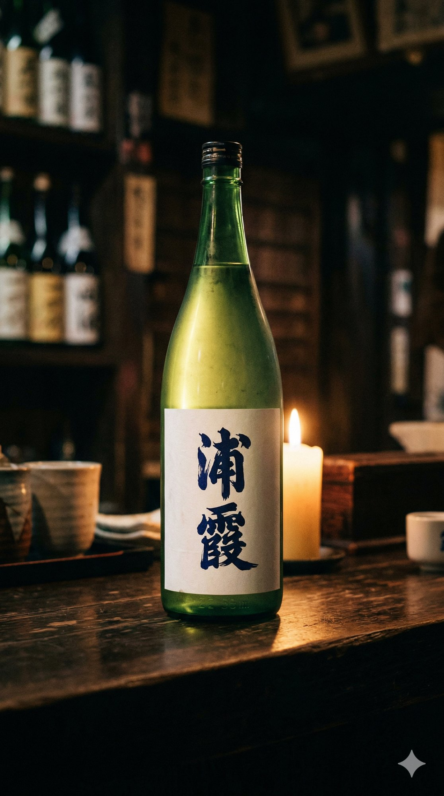
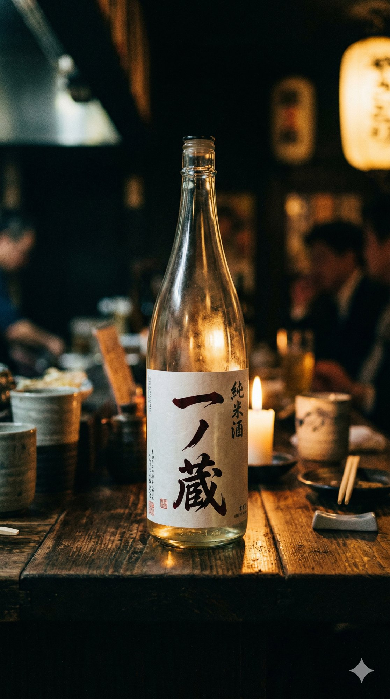
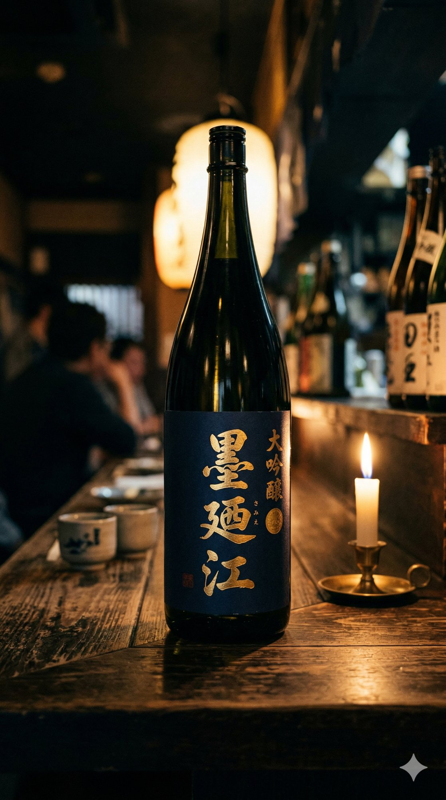
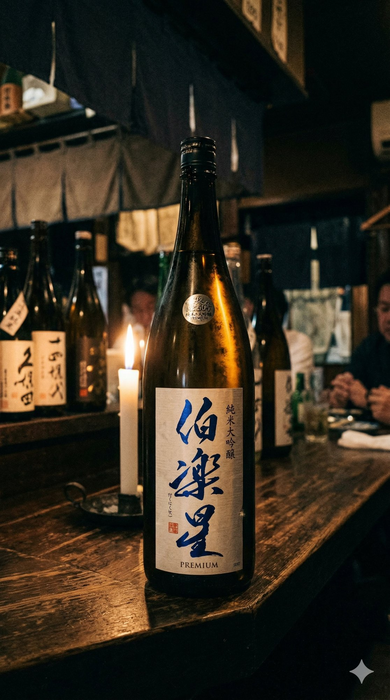

Sendai Sakaba — Kokubuncho 2012
where embers and spirits meet
国分町の路地裏。炭火の温もりと、宮城の地酒。
囲炉裏を囲む、静かな夜を。
2012年、国分町の奥まった路地に「いろり」は生まれました。囲炉裏（いろり）──かつて人々が集い、暖をとり、語らった場所。その原風景を、現代の居酒屋として蘇らせたいと考えました。
炭は宮城・岩手の原木炭を使い、食材は地元の生産者から直接仕入れます。三陸の牡蠣、仙台牛のホルモン、季節の山菜。素材そのものの力を、炭火が引き出します。
地酒は宮城県内10蔵以上と直接取引。その日の料理に合わせて、店主がグラスを選びます。
「浦霞」「一ノ蔵」「墨廼江」「伯楽星」など、宮城を代表する蔵元から季節ごとに厳選した地酒をご用意しています。グラス1杯からお試しいただけますので、飲み比べもお気軽にどうぞ。その日の料理との組み合わせは、店主にお気軽にお尋ねください。




※ 銘柄・在庫は仕入れ状況により変わります。地酒飲み比べセット（3種）¥1,100もご用意。
| 住所 | 宮城県仙台市青葉区国分町2-10-12 いろり国分町ビル 1F |
| 電話 | 022-000-0000 |
| 営業時間 | 17:00 〜 24:00 L.O. 23:30 |
| 定休日 | 月曜日 祝日の場合は翌火曜日 |
| 席数 | カウンター 8席 テーブル 20席 掘りごたつ個室（4〜8名） |
| アクセス | 地下鉄南北線 勾当台公園駅 南3出口より徒歩5分 |